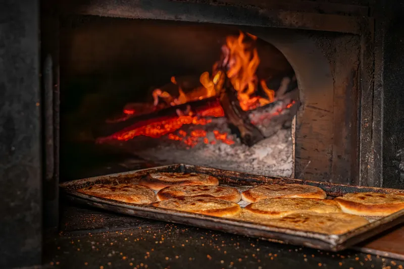
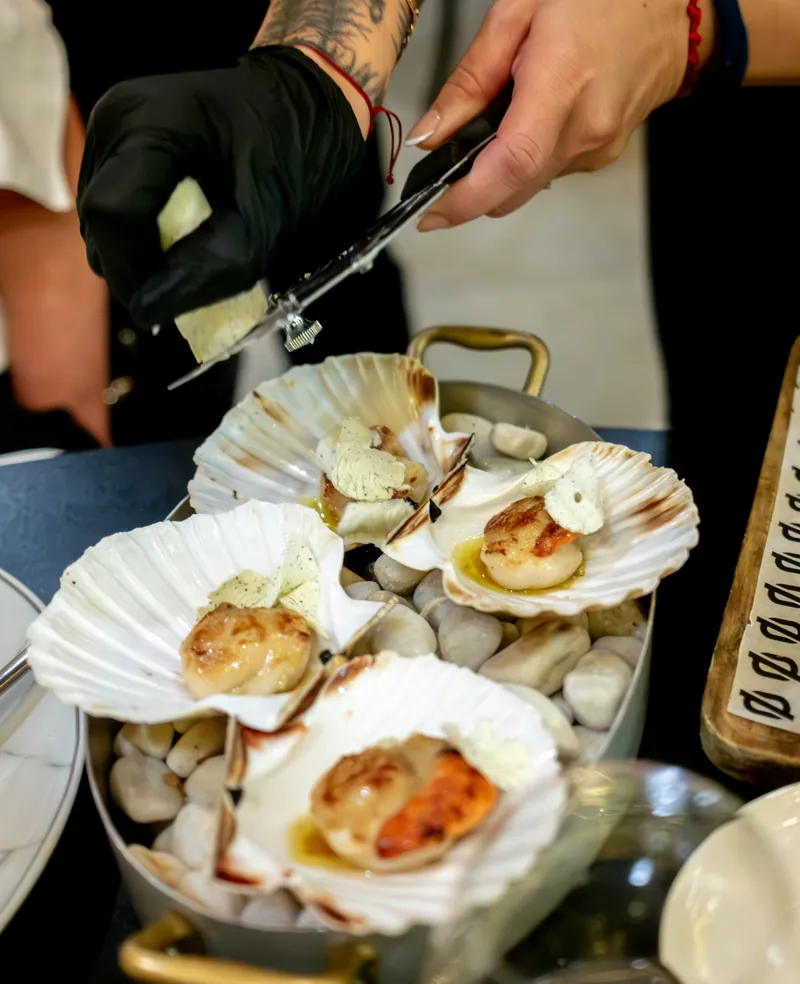
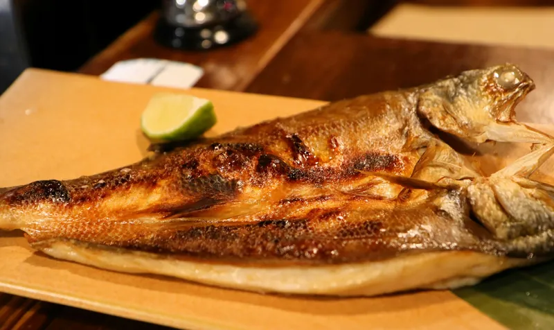
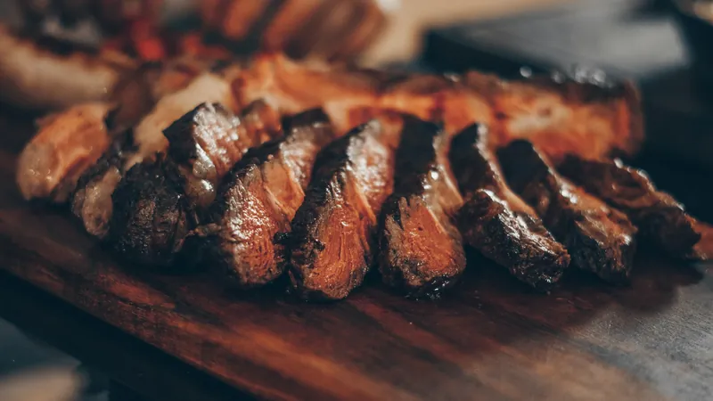
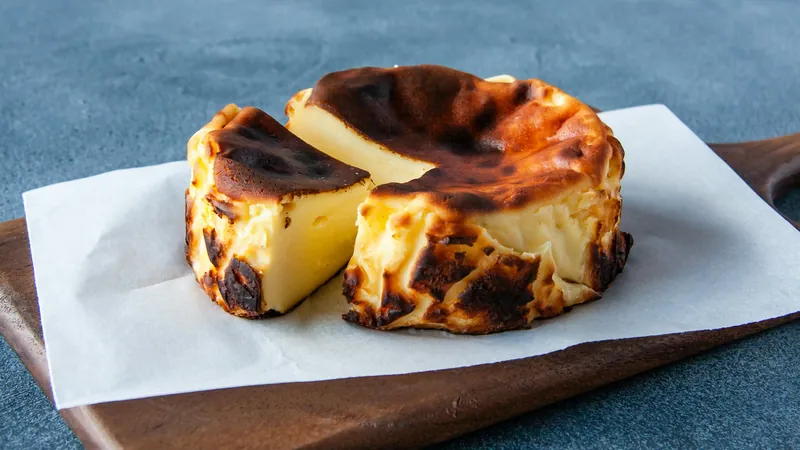

The menu
Autumn. This is what we are cooking now, give or take a dish. The fish and the vegetables change with the deliveries, and the big cuts sell out most Saturdays.
Prices in US dollars. Letters after a dish are allergens, with the key at the foot of the page.
To start
From the oven and the ash
- Flatbread from the oven v G DCultured butter, smoked salt7
- Scallions in the flames vg NBurned on the outside, soft inside, with romesco12
- Leeks cooked in the embers vg MuSplit open, mustard vinaigrette, crisp shallot13
- Beets baked in the ash v DStrained yogurt, dill, walnut oil13
- Lamb merguez SuMade here, grilled, with pickled peppers14
- Scallops roasted in the shell S DThree to a plate, horseradish grated over at the pass19


Over oak
From the grill, cooked on the coals
- Whole cauliflower from the oven vg SeTahini, chili, lemon24
- Split trout F DGrilled skin side down, brown butter, lime29
- Half chicken GBrined, hung over the fire for an hour, served on bread that caught the drippings31
- Pork chop SuCut two fingers thick, cider and sage34
- Sirloin cap for twoAbout 20 oz, rested, sliced and sent out on the board78
- Ribeye on the bone, for two or threeAbout 32 oz, dry-aged four weeks. Allow forty minutes.118


On the side
Each is enough for two
- Potatoes roasted in beef fatIn a pan under the grill, where the fat falls9
- Charred cabbage F DAnchovy butter9
- White beans vgCooked overnight in the oven as it cools9
- Green salad vg MuShallot vinaigrette9
The potatoes are not vegetarian. Ask and we will roast yours in olive oil in the oven.
Sweet
Baked in the oven after service
- Burnt cheesecake v D E GBlack on top, barely set in the middle11
- Apples baked in the embers v DCrème fraîche, cider caramel10
- Chocolate pot v D EOlive oil, smoked salt10

Sunday
From 12:30 until it runs out
- The roast, per person GOne roast a week, usually pork shoulder or whole chickens, carved at the counter. Comes with potatoes, cabbage, beans and bread.38
- Children under tenA smaller plate of the same16
The starters and the sweet things above are on as usual. The rest of the grill menu is not.
To drink
The full list is at the table
- Wine by the glassSix open at a time, mostly New York and France12 to 17
- Wine by the bottleAbout forty, starting at46
- Draft beerTwo taps, both brewed in the Hudson Valley8
- Dry ciderFrom Columbia County, by the glass9
- Smoked apple shrub and sodaNo alcohol6
Bring your own bottle if you like. Corkage is 30.
Allergens and the bill
G gluten D dairy E egg F fish S shellfish N tree nuts Se sesame Mu mustard Su sulfites v vegetarian vg vegan
Everything shares one grill and one oven, and there is flour and fish in a small kitchen. We can leave things off a plate, but we cannot promise any dish is free of traces. Tell us about an allergy when you book and again when you sit down.
A 20% service charge is added to every bill and shared by everyone who works here, kitchen included. There is no tip line and nothing more is expected.
Beef is served as the cook thinks best, which is pink. Say so if you want it otherwise.